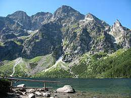

| Площа | Населення | ВВП (загальний і на душу населення) | ||
| 1991 | 603 549 кв. км. | 51 623 500 | 77,35 мільярдів $ | 1487,50 $ |
| 2022 | 40 997 699 | 200,1 мільярдів $ | 4 835,27 $ | |
| Площа | Населення | ВВП (загальний і на душу населення) | ||
| 1991 | 603 549 кв. км. | 51 623 500 | 77,35 мільярдів $ | 1487,50 $ |
| 2022 | 40 997 699 | 200,1 мільярдів $ | 4 835,27 $ | |
Україна, розташована в Східній Європі, є країною, що вражає своєю різноманітною культурою, багатошаровою історією та мальовничою природою. Ця стаття присвячена розгляду ключових аспектів українського суспільства, розкриваючи його історію, географію, культурні досягнення та економічний потенціал.
Україна має різноманітність ландшафтів, від Карпат до Кримських гір, а також обширні рівнини та річки, зокрема Дніпро, який протікає від північного заходу до південно-сходу країни. Природні резервати та національні парки роблять Україну місцем, де природа поєднується з історією та культурою.
Столицею та найбільшим містом України є Київ, який славиться своєю давньою архітектурною спадщиною, включаючи Софійський собор, що внесений до списку світової спадщини ЮНЕСКО. Україна також славиться своєю мальовничою природою, включаючи Карпати на заході та Кримські гори на південному заході.
Історія України налічує тисячоліття, включаючи періоди Київської Русі, Гетьманщини та Соціалістичної Радянської Республіки. Сучасна незалежна Україна стала незалежною державою у 1991 році після розпаду Радянського Союзу.
У середньовіччі Україна входила до складу Київської Русі, яка існувала в IX-XV століттях. Київ був центром культури та торгівлі, а правление князів, таких як Ярослав Мудрий, відзначалося піднесенням розвитку українського народу. З часом Русь розпалася на ряд незалежних князівств, а Київ став об'єктом боротьби між Литвою, Польщею та Московією.
З початком XVII століття українські землі потрапили під владу Речі Посполитої, і період Гетьманщини розпочався. Гетьмани, обраними народом, виконували важливу роль в управлінні країною. Проте, наприкінці XVII століття, Україна відчула наслідки Великої Руїни, що викликали деяку нестабільність в регіоні.
У XVIII столітті, після Північної війни та Андрусівського миру, Україна розділилася між Російською та Австрійською імперіями. Цей період супроводжувався економічним та культурним розвитком, але також призводив до культурного та релігійного пригнічення. Гетьмани поступово втратили свою владу, і Україна стала адміністративною частиною імперій.
XIX століття було періодом національного відродження та соціальних змін. Тарас Шевченко, видатний поет та художник, став символом національної боротьби та героїзму. Велике значення мала також емансипація селян та розвиток громадянського суспільства.
Україна стала частиною Радянського Союзу після подій 1917-1921 років та громадянської війни. Під час Голодомору 1932-1933 років трагічно загинули мільйони людей. Під час Другої світової війни Україна була ареною важких боїв.
Найважливішим етапом в історії України є розпад Радянського Союзу в 1991 році та проголошення незалежності. Україна стала незалежною державою, розпочавши новий етап у своїй історії.
Країна має різноманітну культуру, де література, музика, традиції та гастрономія відображають різні впливи історії та географічного положення. Україна є державою зі значущим економічним потенціалом та вагомим внеском у світові справи.
Сучасна економіка України стрімко розвивається, залучаючи іноземні інвестиції та розширюючи експортні можливості. Ключові галузі включають сільське господарство, ІТ-технології, виробництво та енергетику. Україна активно співпрацює з міжнародними партнерами, що сприяє її інтеграції у світове господарство.
За останні роки Україна пройшла складні випробування, включаючи події Майдану та конфлікт на сході країни. Незважаючи на це, українці продовжують демократичні зміни, розвивають свою культуру та зберігають національний дух.
Україна залишається незабутнім краєм, де традиції переплітаються з сучасністю, а природа обіймає історію та культуру. Завдяки своїй виразній ідентичності та потужному потенціалу, Україна продовжує зацікавлювати світ і залишатися важливою фігурою на світовій арені.
| Андріївська церква | Карпати | Києво-Печерська лавра |
|---|---|---|
 |
 | |
| Вікіпедія | Вікіпедія | Вікіпедія |
| Православна церква на честь Святого Андрія у стилі бароко, пам'ятка архітектури та монументального живопису XVIII ст. світового значення у Києві, споруджена за проєктом видатного архітектора Бартоломео Растреллі. | Гірська система у центральній частині Європи. | Київський православний монастирський комплекс. Один із найбільших християнських центрів України, визначна пам'ятка історії та архітектури. |